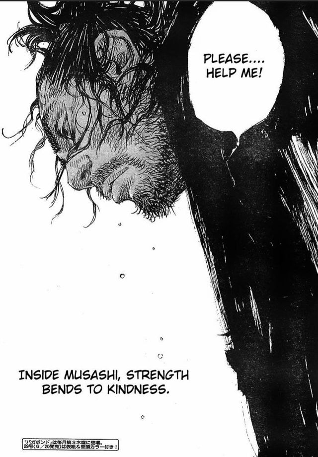
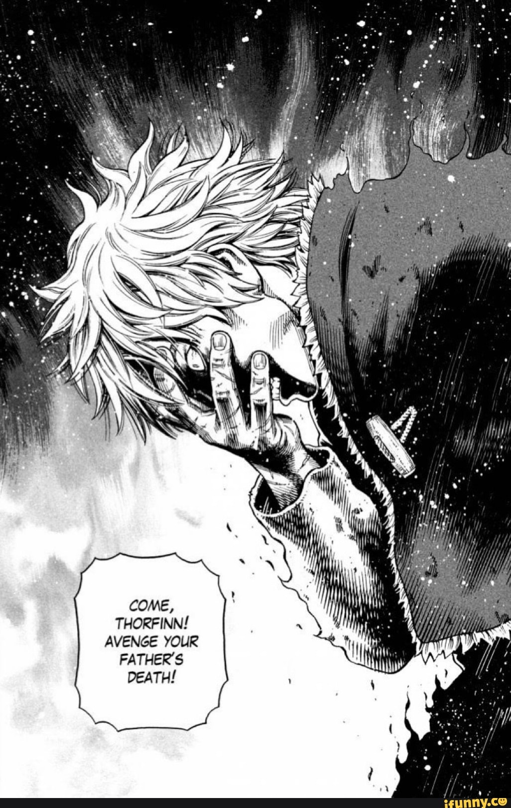
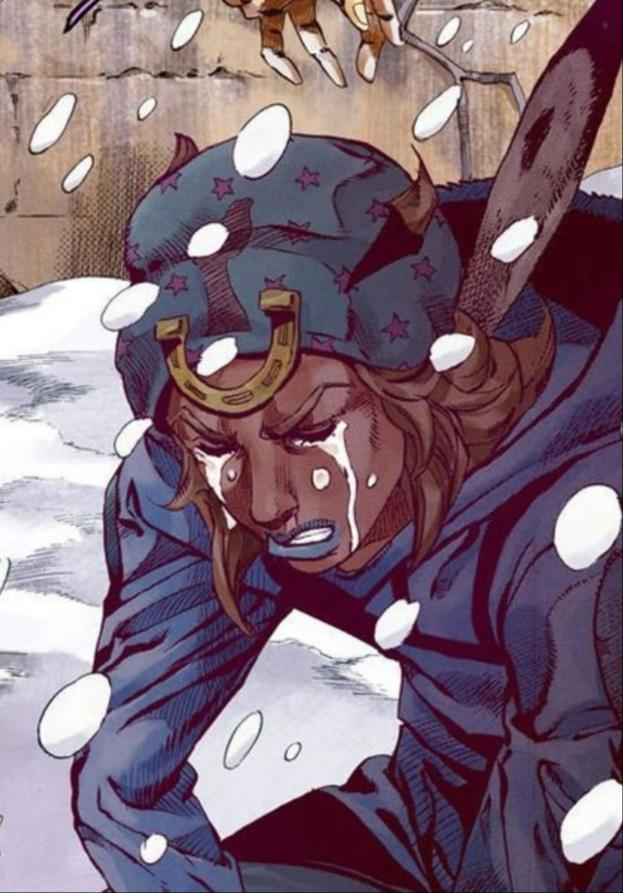
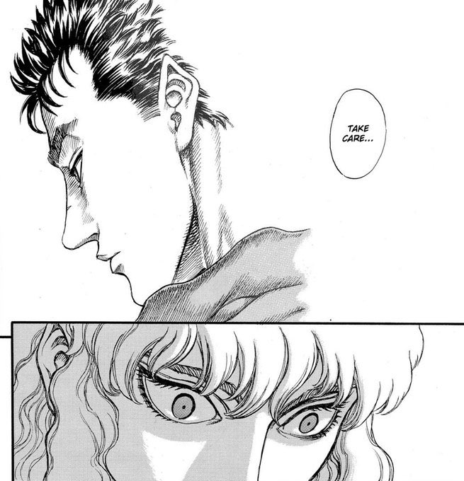

This is the Tokyox otherpage! This is where the top six highest scored manga panels in the "other" category land in. The other category is generally something unique to the submitter,
and has to do with how the panels effect people individually. Other rating scale higher than beauty, and meaning, so if other rating are lower than beauty, and meaning, they can still overpower
them.
This Month's OVERALL Panel Submission Winners

Submitter: rebuilder526
Manga: Vagabond
Musashi is asking for help and betraying his ego. This related to some of our voters and submitter, by relating to their personal lives and their egos. Musashi is relatable and inspirational to people, by being able to tuck his ego away
and asking someone for help. This is something a lot of people struggle with in the real world, and can serve as a motivator.

Submitter: reaper21
Manga: Vinland Saga
Thorfinn was at a time where he had an opportunity to avenge his father's death, but he had already gone through a personality change into someone more kind, and strong. He is relatable
to some of our voters to that he motivates them to not go back on their word or ideals when times are tough, and to stay strong."

Submitter: FriendlyToad031
Manga: Jojo's Bizzare Adventure
Johnny is crying because he felt he lost his dream, this is relatable to some of our site visitors as everyone has been through a time in their lives where they felt they couldn't achieve something.
Johnny serves as a reminder that people must perservere through struggles, or they will never break our of the hole they are in.

Submitter: felix2
Manga: Berserk
Guts and Griffith must depart as friends, and many of our visitors have been through an experience where they have had to leave a friend, and this panel encapsulates that feeling, and empathizes with the people who have had to leave loved ones behind.

Submitter: onepiece2
Manga: One Piece
Luffy is losing his brother here, and many of our site visitors have felt the pain of losing a loved one, and they can relate to what Luffy would be going through after that. This panel is significant and holds a piece in our visitor's hearts.

Submitter: roleypoley62
Manga: Toyko Ghoul
Kaneki lost his father, and many people can relate to the loss of a loved one like their father. This manga panel contains strong relatability towards the site visitors, and that is why is heavily deserves a spot on this list.
When it come to submitting, the file sizes for the images DO NOT MATTER. We will scale the images down to size for the submitting winners. The images must be manga panels,
and a description of them must me made. Submittions will not be taken into account if they are not done through the submittion form at the bottom of the page. The type of manga panel must be typed in the description too. Is this manga panel meant to have a powerful meaning, display beauty, or something different. There are only six winners per month, and submissions must be made before there is a week left in the month.
Winners are displayed next to their submitted panels, and their descriptions are mixed in with the publishers. We thank you all for submitting, and creating such a wonderful community!
Submit Your Own Panel
Type in your name, email, and your own description of the panel. Also, send in the image.
-
Address
1234 Somewhere Rd.
Nashville, TN 00000
United States
-
Phone
000-000-0000
-
Email
hello@untitled.tld


{kind=link}
{kind=link}
{kind=link}
{kind=link}